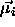
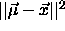
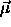
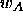
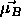
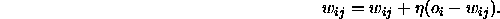
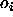
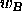
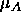

The idea of this algorithm is to find a natural grouping in a set of
data ([SK92], [DH73]. Every data vector is associated
with a point in a d-dimensional data space. The hope is that the
vectors  of the same class form a cloud or a cluster in data
space. The algorithm presupposes that the vectors
of the same class form a cloud or a cluster in data
space. The algorithm presupposes that the vectors  belonging
to the same class
belonging
to the same class  are distributed normally with a mean vector
are distributed normally with a mean vector

, and that all input vectors are normalized. To classify a feature vector measure the Euclidian distance
measure the Euclidian distance

from to all other mean vectors
to all other mean vectors

and assign to the class of the nearest mean. But
what happens if a pattern
to the class of the nearest mean. But
what happens if a pattern  of class
of class 
is assigned to a wrong class ? Then for this wrong classified pattern the
two mean vectors
? Then for this wrong classified pattern the
two mean vectors  and
and  are moved or
trained in the following way:
are moved or
trained in the following way:
 which the wrong classified
pattern belongs to, and which is the nearest neighbor to this pattern,
is moved a little bit towards this pattern.
which the wrong classified
pattern belongs to, and which is the nearest neighbor to this pattern,
is moved a little bit towards this pattern.

, to which a pattern of class is
assigned wrongly, is moved away from it.
is
assigned wrongly, is moved away from it.
The vectors are moved using the rule:

where  is the weight
is the weight between the output
between the output

of a input unit i and a output unit j. is the learning parameter. By choosing it less or greater than
zero, the direction of movement of a vector can be influenced.
is the learning parameter. By choosing it less or greater than
zero, the direction of movement of a vector can be influenced.
The DLVQ algorithm works in the following way:
 . Initialize the net with these vectors. This means:
Generate a unit for every class and initialize its weights with the
corresponding values.
. Initialize the net with these vectors. This means:
Generate a unit for every class and initialize its weights with the
corresponding values.
 of a class
of a class  is assigned to a class
is assigned to a class 
then do the following: which is nearest to
which is nearest to  in its direction.
in its direction.
 , to which
, to which  is falsely assigned to away from it.
is falsely assigned to away from it.
 associated
with a wrong class
associated
with a wrong class  , a new prototype vector
, a new prototype vector 
. For every class, choose one of the new mean vectors and add it to the net. Return to step 2.